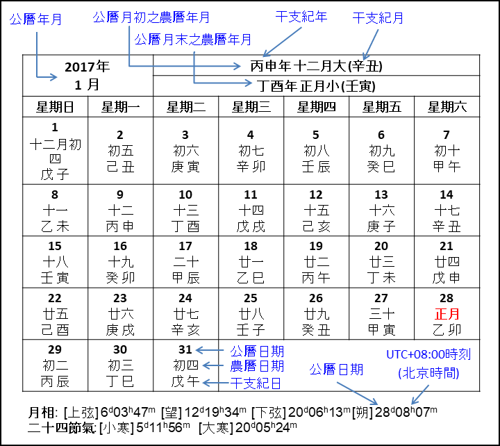

(0=公元前1年、-1=公元前2年、-2=公元前3年、餘類推。)
每日正午的儒略日數:
春秋時期(公元前722年 – 前481年)各國施行不同曆法，現在我們只能從《春秋》這部由孔子修訂的魯國編年史書中獲得當時魯國施行曆法的不完整資料。這裡稱當時魯國的曆法為春秋曆，本網頁的春秋曆是根據張培瑜、陳美東、薄樹人和胡鐵珠著的《中国古代历法》(中国科学出版社‧北京‧2008年3月)書中第三章第五節的資料復原。具體計算方法在春秋曆網頁闡述。
除了春秋曆外，這裡還提供周曆、殷曆和夏曆(其中三部古六曆)的資料。一般認為這三部曆法應在春秋末期或戰國時代才建立，把這三部曆法在春秋時期列出僅供參考而已。本網頁的古六曆是根據《中国古代历法》書中第三章第六節的資料復原。具體計算方法在古六曆網頁闡述。
現在下面顯示的曆法是曆，但可點擊下面的按鍵改變顯示的曆法。
戰國時代(約前480年至前222年)各國施行不同曆法，當時使用的曆法有六種:周曆、魯曆、殷曆、夏曆、黃帝曆和顓頊曆，合稱「古六曆」。六種曆法的計算方法大致相同，但各曆的年首不盡相同，用以計算曆法的曆元也不同。本網頁的古六曆是根據張培瑜、陳美東、薄樹人和胡鐵珠著的《中国古代历法》(中国科学出版社‧北京‧2008年3月)書中第三章第六節所述的資料復原。具體計算方法在古六曆網頁敘述。
現在下面顯示的古六曆是曆，但可點擊下面的按鍵改變顯示的古六曆。
下圖解釋月曆表各欄的意思。例子取自公曆2017年1月的月表。

農曆一年一般有十二個月，月份有大有小，大月三十日，小月二十九日。為了使農曆不偏離季節交替週期，農曆每三年左右會有一個閏月，含閏月的農曆年有十三個月。閏月名稱取上一個月的月數，然後在前面加上「閏」字。例如2017年農曆丁酉年六月之後是閏月，謂「閏六月」。
現在的農曆一般用干支紀年，干支也用來紀月、紀日和紀時，但民間較少使用。月干支尤其少用，這裡自漢武帝太初元年(公元前104年)起的月曆才註有月干支。
每月下面的月相和二十四節氣日期指公曆日期，時刻是用經120°標準時。某些朔與望伴隨日月食，在列出時刻後有註明，並符有連結到那些交食的網頁(只有英文版)，網頁內有交食的詳細資料。其他日月食的資料可參考我的八千年日月食(英文)網站。
1912年前的農曆年附加帝王年號，年號與公曆年的對照可參看年號網頁。
1734年前的日曆列出「曆書節氣」的日期。曆書節氣是指以當時曆法來計算的節氣。自清順治二年(1645年)起二十四節氣用定氣計算，之前則用平氣。曆書節氣上一行所示之二十四節氣以現今定義的方法計算，亦屬定氣。平氣和定氣的差別可參閱本網站的二十四節氣網頁。1733年後的曆書節氣日期基本上與用現代方法計算的日期一致，所以除了那些曆書節氣與現代計算有差異外，其餘略去不註。
公曆在1582年10月15日及以後用格里高利曆，之前用儒略曆，公元8年以前則用逆推儒略曆(proleptic Julian calendar)。
儒略日數是指從公元前4713年1月1日正午起算的積日，所以每日正午的儒略日數是整數。這裡沒有說明所用的時間標準(UT1 或地方時等)，是假設了起算時刻(公元前4713年1月1日正午)和每日正午所指的時刻用相同的時間標準。如果選擇顯示每日正午的儒略日數，數字會顯示在日干支之下。本網站也有儒略日數和日干支計算器。
可以用網址的查詢字符"?y=[年份]"直接輸入年份。例如要顯示1850年的年曆，可用(相對)位址index_chinese.html?y=1850。如果查詢字符中的y參數不是數字或超出-721至2200的範圍則無效。